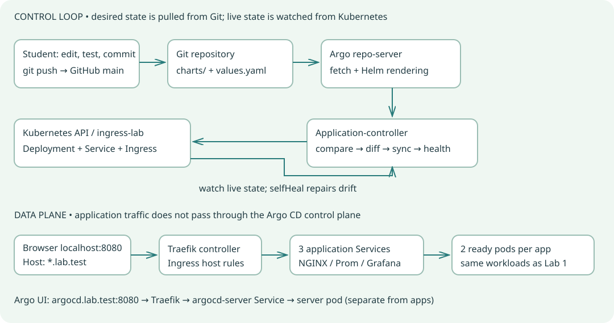

Two flows, one cluster

Argo CD manages desired configuration. It does not serve the three application requests or replace their ingress controller.
Commands use Git Bash on Windows or Linux Bash inside KillerCoda, from this repository root. Export MSYS_NO_PATHCONV=1 in Git Bash to prevent kubectl path rewriting. Keep credentials out of Git. The public repository URL is preconfigured for vrdipu/ingress-lab; students should use their own fork for write exercises.
LAB 2.01GitOps: Git declares, Argo CD reconciles
Git contains the desired state. Argo CD fetches this repository, renders each Helm chart, compares it with Kubernetes, and applies changes when sync is requested or automated. Kubernetes controllers then create pods. GitOps is pull-based delivery: CI can test and push Git changes without holding your cluster-admin credentials. Sync status and health are different: Synced means desired resources match live resources; Healthy means resource health checks pass. A deployment can be Synced and still Degraded.
Check prerequisites
export MSYS_NO_PATHCONV=1
kubectl config current-context
kubectl get nodes
kubectl get deployments -n ingress-lab
kubectl get ingressclass traefik
git remote -v
# Docker Desktop only: kubectl config use-context docker-desktop
Interview questions & answers
What is reconciliation?
Answer: A repeated compare-and-act loop that converges actual state toward desired state. Git polling detects new desired state; Kubernetes watches detect live changes.
Is Argo CD a CI build system?
Answer: No. Build, test, scan and push images in CI. Commit the desired image tag or digest; Argo CD delivers that declared state.
Install the Argo CD control plane
Complete Lab 1 first. Use this repository root in Git Bash / Linux Bash. The pinned community-maintained argo-helm chart 10.11.6 installs Argo CD v3.5.6. The setup also configures Traefik to publish 127.0.0.1 as the Ingress status address, so the default Argo Ingress health check can finish. This reports a local entry address; it does not test HTTP connectivity. This small local installation runs a single controller, server, repo-server and Redis, not a production HA installation. Allow extra cluster resources and image-download time. The setup script creates a restricted AppProject and three Applications in manual-sync mode; it does not sync them automatically. For a fork, change repoURL in all three Application files AND sourceRepos in the project file to your repository before setup.
Install all prerequisites for Lab 2
bash scripts/argocd-setup.sh
Inspect components
kubectl get pods,svc -n argocd
kubectl get crd applications.argoproj.io appprojects.argoproj.io
kubectl get applications -n argocd
kubectl get appproject ingress-lab -n argocd
Interview questions & answers
What do the components do?
Answer: The API server serves UI/API and authentication. Repo-server fetches Git and renders manifests. Application-controller compares and reconciles resources. Redis caches data. ApplicationSet can generate Applications; it is optional in this lab.
Application versus AppProject?
Answer: An Application defines one source, destination and sync policy. AppProject limits allowed repositories, destinations and resource kinds. It complements Kubernetes RBAC; it does not replace it.
Open the URL and sign in
Argo CD is exposed through the existing Traefik controller at http://argocd.lab.test:8080. The local values disable Argo server TLS so Traefik forwards ordinary HTTP; this is only a localhost exercise. The port-forward binds to 127.0.0.1. Add the hosts entry using an elevated editor. Keep the password out of Git and screenshots. After first login, change it using User Info → Update Password. Do not reuse this local HTTP configuration for a public server. On KillerCoda do not use the local URL or edit a hosts file. Run bash scripts/killercoda-access.sh after setup, keep it running, and open its printed argocd URL for port 8083. The access script sends traffic through Traefik and sets the runtime Argo external URL. Use the same admin login below.
Open Argo CD UI · Username: admin. Docker Desktop hosts file only (KillerCoda uses generated URLs): C:\Windows\System32\drivers\etc\hosts.
Terminal A: Docker Desktop only; KillerCoda uses its access launcher
kubectl port-forward -n ingress-system svc/lab-ingress-traefik 8080:80 --address 127.0.0.1
Add this line to the Windows hosts file
127.0.0.1 argocd.lab.test
Read the initial password locally
kubectl get secret argocd-initial-admin-secret -n argocd -o jsonpath='{.data.password}' | base64 --decode
printf '\n'
Check Argo server health through ingress
curl -i -H "Host: argocd.lab.test" http://127.0.0.1:8080/healthz
Interview questions & answers
Which credentials do I use?
Answer: Username admin and the initial password stored in argocd-initial-admin-secret. If you changed the password earlier, use the changed password; the initial secret is not a current-password lookup.
Why configure server.insecure?
Answer: Here it selects HTTP behind the local ingress, not anonymous access. Authentication remains enabled. Production should use trusted TLS and appropriate SSO/RBAC.
Read the Application and adopt today’s workloads
Open Applications in the UI: lab-nginx, lab-prometheus and lab-grafana. Inspect Details → source repository, main revision, charts/<app> path, destination ingress-lab, and project ingress-lab. Each source uses the same original Helm chart with values.yaml and a matching releaseName. These Applications adopt the existing named resources without uninstalling them. There is no resources-finalizer, so deleting an Application preserves workloads by default. Inspect DIFF before SYNC; normal adoption adds Argo tracking metadata. Never use force/replace for this handover. The old Helm release records remain as frozen history: Argo CD uses helm template, not helm install, and does not update Helm release history. Do not run helm upgrade, helm rollback or helm uninstall for these three apps after adoption. The original scripts now block if these Applications exist.
Review the NGINX declaration
cat gitops/applications/nginx.yaml
kubectl get application lab-nginx -n argocd -o yaml
Sync all three, without installing the Argo CLI
bash scripts/argocd-sync.sh
bash scripts/argocd-check.sh
Verify ownership and existing routes
kubectl get deployment nginx -n ingress-lab -o yaml
bash scripts/smoke-test.sh
Interview questions & answers
Does Argo CD install a Helm release?
Answer: No. It renders Helm manifests and manages Kubernetes resources itself. helm list can still show the old frozen records from Lab 1; those records are not current GitOps state.
Why keep the existing resource names and namespace?
Answer: They let Argo CD adopt the intended resources without creating parallel apps. Inspect the diff to confirm identity and avoid an accidental replacement.
Manual sync: change Git, inspect diff, deploy
Start with manual sync. Edit only charts/nginx/values.yaml, changing replicaCount from 2 to 3, then commit and push. Use your fork URL if you are a student. Refresh asks Argo to compare; it does not deploy. Expect OutOfSync while live replicas remain 2. Open DIFF to see desired 3 versus live 2, then SYNC. Wait for Healthy and three replicas. Finally restore replicaCount to 2 in Git, commit, push, refresh and sync again. The standard check script expects the baseline two replicas.
Change the desired replica count in Git
sed -i 's/^replicaCount: 2$/replicaCount: 3/' charts/nginx/values.yaml
helm lint ./charts/nginx --strict
git add charts/nginx/values.yaml
git commit -m "Practice GitOps: scale nginx to three replicas"
git push origin main
Request comparison and inspect current state
kubectl annotate application lab-nginx -n argocd argocd.argoproj.io/refresh=hard --overwrite
kubectl get application lab-nginx -n argocd
kubectl get deployment nginx -n ingress-lab
Apply the Git state
bash scripts/argocd-sync.sh nginx
kubectl get deployment nginx -n ingress-lab
Restore two replicas through Git
sed -i 's/^replicaCount: 3$/replicaCount: 2/' charts/nginx/values.yaml
git add charts/nginx/values.yaml
git commit -m "Restore nginx baseline to two replicas"
git push origin main
kubectl annotate application lab-nginx -n argocd argocd.argoproj.io/refresh=hard --overwrite
# Wait until Details shows the new Git revision, then:
bash scripts/argocd-sync.sh nginx
Interview questions & answers
Refresh versus sync?
Answer: Refresh recalculates comparison, and hard refresh also invalidates cached manifests. Sync applies desired manifests. A refresh can lead to deployment only when automated sync is enabled.
What proves the change came from Git?
Answer: The Application’s resolved commit SHA, the desired/live diff and sync operation history link the rollout to the pushed commit, rather than a local uncommitted edit.
Automated sync and self-healing
For permanent policy changes edit the Application YAML in Git, commit/push, then kubectl apply the declaration. These bootstrap Applications are not themselves managed by a parent Application, so pushing a policy file alone does not update the live Application. Auto-sync deploys Git changes; selfHeal repairs live drift even when the Git commit has not changed. Start with prune false. After applying the policy, manually scale NGINX to 1. Observe Argo CD restore spec.replicas to the Git value 2, then wait for 2/2 ready. Do not use this technique where an HPA is meant to own replicas without first planning field ownership.
Create the practice auto-sync policy
bash scripts/argocd-policy.sh auto
git add gitops/applications/nginx.yaml
git commit -m "Enable nginx auto-sync and self-healing"
git push origin main
kubectl apply -f gitops/applications/nginx.yaml
Create drift and watch repair
kubectl scale deployment nginx -n ingress-lab --replicas=1
kubectl get deployment nginx -n ingress-lab -w
# Ctrl+C after spec replicas returns to 2 and both pods are ready.
kubectl get application lab-nginx -n argocd
kubectl rollout status deployment/nginx -n ingress-lab --timeout=180s
Interview questions & answers
Auto-sync versus selfHeal?
Answer: Auto-sync delivers a changed desired state from Git. selfHeal also triggers correction for cluster-only changes at the same Git revision.
Why did my kubectl edit disappear?
Answer: With selfHeal enabled, Git remains authoritative for managed fields. Commit the intended change instead of repeatedly editing the cluster.
Pruning: delete only what Git removed
Pruning deletes resources previously tracked by this Application when they disappear from desired manifests. It does not delete arbitrary unrelated ConfigMaps. Use only the disposable gitops-prune-demo ConfigMap for practice. Keep automatic prune false and use an explicit UI SYNC with PRUNE checked for the removal. This separates Git removal, OutOfSync detection, and deletion. Never practice pruning on Prometheus data or namespaces.
Add a disposable chart template
cp gitops/exercises/prune-demo.yaml charts/nginx/templates/prune-demo.yaml
git add charts/nginx/templates/prune-demo.yaml
git commit -m "Practice GitOps: add disposable prune demo"
git push origin main
kubectl annotate application lab-nginx -n argocd argocd.argoproj.io/refresh=hard --overwrite
# Wait for auto-sync or manually sync after the new revision is visible.
kubectl get configmap gitops-prune-demo -n ingress-lab
Remove it from desired state
git rm charts/nginx/templates/prune-demo.yaml
git commit -m "Practice GitOps: remove disposable prune demo"
git push origin main
kubectl annotate application lab-nginx -n argocd argocd.argoproj.io/refresh=hard --overwrite
# In UI: lab-nginx → SYNC → enable PRUNE → SYNCHRONIZE.
kubectl get configmap gitops-prune-demo -n ingress-lab
# Expected after prune: NotFound.
Interview questions & answers
Why can a deleted Git resource remain live?
Answer: Without pruning, Argo CD leaves it live and reports that it requires pruning. Removing a manifest alone is not always permission to delete the live resource.
What protects against an empty application deleting everything?
Answer: Automatic pruning normally keeps allowEmpty false. It is a safety guard, not a substitute for review, backups and restricted permissions.
Explore the UI and optional CLI
UI tasks: inspect the resource tree; select a Deployment and view desired/live manifests, events and pod logs; use DIFF before SYNC; check History and Rollback to identify revisions. Refresh is cheaper than Hard Refresh; use hard refresh for suspected stale rendering. Do not click DELETE with cascading deletion enabled. Optional CLI commands below require a matching official Argo CD CLI already installed. The full lab works using UI and kubectl without it. --grpc-web works over the dedicated local HTTP API forward shown below; UI access still uses ingress.
Optional CLI: terminal A, direct API connection on either platform
kubectl port-forward -n argocd svc/argocd-server 8090:80 --address 127.0.0.1
Optional CLI: terminal B
argocd login localhost:8090 --username admin --plaintext --grpc-web
# Enter the password interactively. This direct API forward is separate from UI ingress.
argocd app list --grpc-web
argocd app get lab-nginx --grpc-web
argocd app diff lab-nginx --grpc-web
argocd app history lab-nginx --grpc-web
argocd app sync lab-nginx --grpc-web
argocd app wait lab-nginx --sync --health --timeout 180 --grpc-web
Get the same status with kubectl
kubectl get applications -n argocd
kubectl get application lab-nginx -n argocd -o jsonpath='{.status.sync.revision}'
kubectl get application lab-nginx -n argocd -o jsonpath='{.status.operationState.message}'
Interview questions & answers
When should Hard Refresh be used?
Answer: When comparison may be using stale repository/render caches; it forces fresh manifest generation. It is not a fix for invalid YAML, missing permissions or unhealthy pods.
What is a Helm parameter override?
Answer: An Application-level override can take precedence over values.yaml, so the chart file may not explain effective desired state. Prefer reviewed Git values and inspect Application parameters during troubleshooting.
Rollback by Git revert and understand ownership
The preferred GitOps rollback is a new commit that reverts the bad change, followed by reconciliation. If auto-sync is enabled, an imperative rollback can be blocked or later replaced by the current Git head. Use a specific single-purpose commit SHA; inspect the diff before reverting. The Application definitions are bootstrapped with kubectl; their child workloads are Git-managed. App-of-apps or ApplicationSet is a later exercise for managing the Application lifecycle itself.
Inspect and revert a practice commit
git log --oneline -8
# Replace BAD_COMMIT with the SHA of your own single-purpose practice change:
git revert BAD_COMMIT
git push origin main
kubectl annotate application lab-nginx -n argocd argocd.argoproj.io/refresh=hard --overwrite
# Manual-sync policy? Inspect diff and sync. Auto-sync? Watch reconciliation.
Interview questions & answers
Why revert rather than reset and force-push?
Answer: Revert preserves an auditable history and works cleanly with shared branches. Force-pushing rewrites history and complicates review and correlation.
Why does pushing an Application policy YAML not change policy automatically?
Answer: In this design no parent Application watches gitops/applications. Reapply the YAML after committing it, or deliberately introduce an app-of-apps lifecycle later.
Troubleshoot with evidence
Use the Application conditions and operation message first. ComparisonError often means a repository fetch or rendering problem. SyncFailed can mean API validation or AppProject restrictions. Synced + Degraded usually needs pod readiness, image pulls, resource or application debugging. Do not fix persistent state by blindly clicking Force or Replace. For a private fork, connect it through Settings → Repositories with narrowly scoped credentials stored in Kubernetes Secrets, never committed to this repo. A public repo normally needs no repository credential.
Read errors and component logs
kubectl get application lab-nginx -n argocd -o yaml
kubectl get events -n ingress-lab --sort-by=.lastTimestamp
kubectl logs -n argocd statefulset/argocd-application-controller --tail=50
kubectl logs -n argocd deployment/argocd-repo-server --tail=50
kubectl describe pods -n ingress-lab
Recheck the rendered chart and routes
helm lint charts/nginx --strict
helm template nginx charts/nginx -n ingress-lab
bash scripts/argocd-check.sh
bash scripts/smoke-test.sh
Interview questions & answers
OutOfSync versus Degraded?
Answer: OutOfSync is a desired/live comparison result. Degraded is a health result. They answer different questions and can occur independently.
Why is a valid manifest denied?
Answer: The AppProject may disallow that repository, destination or resource kind, or Kubernetes RBAC/admission may deny the API request. Read the actual error before changing permissions.
Pause management, restore baseline and clean up deliberately
End practice with replicaCount 2, no prune-demo template, and manual sync policy in the committed nginx Application. Apply the baseline Application and sync all three. The control plane can remain installed for learning. To return management to Helm, first remove the Argo Applications WITHOUT cascading deletion, verify they are gone, then use the Lab 1 Helm deployment script to reconcile the frozen Helm records to the current chart. Do not uninstall a frozen application Helm release while Argo still owns it. The commands below explicitly preserve workloads.
Final baseline checks
git status --short
bash scripts/argocd-policy.sh manual
git add gitops/applications/nginx.yaml
git commit -m "Restore manual GitOps baseline"
git push origin main
kubectl apply -f gitops/applications/
bash scripts/argocd-sync.sh
bash scripts/argocd-check.sh
Optional hand-back to Helm; preserves workloads
kubectl get applications -n argocd -o yaml
# Confirm these lab Applications have NO resources-finalizer before deletion.
kubectl delete application lab-nginx lab-prometheus lab-grafana -n argocd --cascade=orphan
kubectl get deployments -n ingress-lab
bash scripts/deploy.sh
Optional Argo CD control-plane removal after hand-back
kubectl delete ingress argocd -n argocd
kubectl delete appproject ingress-lab -n argocd
helm uninstall argocd -n argocd
# Namespace and CRDs may remain; do not blindly delete shared CRDs or namespaces.
Interview questions & answers
What is cascading Application deletion?
Answer: With the Argo resources-finalizer, deleting an Application can delete its managed resources. These examples intentionally omit that finalizer. Check live metadata before deleting.
Can Helm and Argo manage the same workloads simultaneously?
Answer: They can issue conflicting updates. Choose one active owner; freeze Helm during GitOps and deliberately hand back ownership before running its lifecycle commands.
Every GitOps manifest, explained
argocd-values.yaml configures the control plane. AppProject restricts the source and destination. Applications point to the existing charts and begin in manual mode. argocd-ingress.yaml routes the UI. The exercise ConfigMap is disposable.
gitops/applications/grafana.yaml
apiVersion: argoproj.io/v1alpha1
kind: Application
metadata:
name: lab-grafana
namespace: argocd
# No resources-finalizer: deleting this Application preserves workloads.
spec:
project: ingress-lab
source:
repoURL: https://github.com/vrdipu/ingress-lab.git
targetRevision: main
path: charts/grafana
helm:
releaseName: grafana
valueFiles:
- values.yaml
destination:
server: https://kubernetes.default.svc
namespace: ingress-lab
# Start with MANUAL sync so students can inspect the adoption diff.
syncPolicy:
automated:
enabled: false
prune: false
selfHeal: false
syncOptions:
- ApplyOutOfSyncOnly=true
gitops/applications/nginx.yaml
apiVersion: argoproj.io/v1alpha1
kind: Application
metadata:
name: lab-nginx
namespace: argocd
# No resources-finalizer: deleting this Application preserves workloads.
spec:
project: ingress-lab
source:
repoURL: https://github.com/vrdipu/ingress-lab.git
targetRevision: main
path: charts/nginx
helm:
releaseName: nginx
valueFiles:
- values.yaml
destination:
server: https://kubernetes.default.svc
namespace: ingress-lab
# Start with MANUAL sync so students can inspect the adoption diff.
syncPolicy:
automated:
enabled: false
prune: false
selfHeal: false
syncOptions:
- ApplyOutOfSyncOnly=true
gitops/applications/prometheus.yaml
apiVersion: argoproj.io/v1alpha1
kind: Application
metadata:
name: lab-prometheus
namespace: argocd
# No resources-finalizer: deleting this Application preserves workloads.
spec:
project: ingress-lab
source:
repoURL: https://github.com/vrdipu/ingress-lab.git
targetRevision: main
path: charts/prometheus
helm:
releaseName: prometheus
valueFiles:
- values.yaml
destination:
server: https://kubernetes.default.svc
namespace: ingress-lab
# Start with MANUAL sync so students can inspect the adoption diff.
syncPolicy:
automated:
enabled: false
prune: false
selfHeal: false
syncOptions:
- ApplyOutOfSyncOnly=true
gitops/argocd-ingress.yaml
apiVersion: networking.k8s.io/v1
kind: Ingress
metadata:
name: argocd
namespace: argocd
spec:
ingressClassName: traefik
rules:
- host: argocd.lab.test
http:
paths:
- path: /
pathType: Prefix
backend:
service:
name: argocd-server
port:
number: 80
gitops/argocd-values.yaml
# Local learning installation; not a production HA control plane.
crds:
install: true
configs:
params:
server.insecure: true
cm:
url: http://argocd.lab.test:8080
timeout.reconciliation: 60s
application.resourceTrackingMethod: annotation
server:
replicas: 1
service:
type: ClusterIP
controller:
replicas: 1
repoServer:
replicas: 1
applicationSet:
replicas: 1
dex:
enabled: false
notifications:
enabled: false
gitops/bootstrap/project.yaml
apiVersion: argoproj.io/v1alpha1
kind: AppProject
metadata:
name: ingress-lab
namespace: argocd
spec:
description: Three existing ingress lab applications, one destination namespace
sourceRepos:
- https://github.com/vrdipu/ingress-lab.git
destinations:
- namespace: ingress-lab
server: https://kubernetes.default.svc
clusterResourceWhitelist: []
namespaceResourceWhitelist:
- {group: apps, kind: Deployment}
- {group: "", kind: Service}
- {group: "", kind: ConfigMap}
- {group: networking.k8s.io, kind: Ingress}
gitops/exercises/prune-demo.yaml
apiVersion: v1
kind: ConfigMap
metadata:
name: gitops-prune-demo
namespace: ingress-lab
data:
lesson: Remove this template from Git, sync with prune, and this ConfigMap disappears.